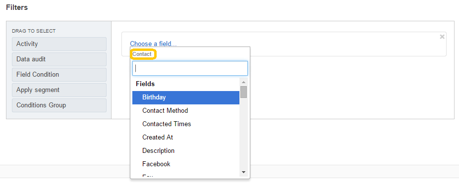
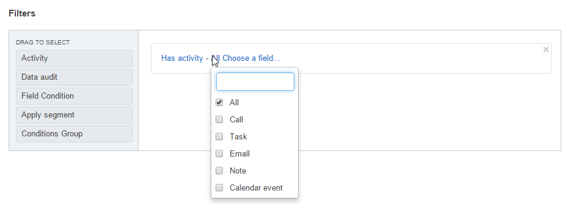
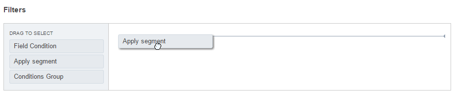

Data Filters For Reports, Segments, and Collections¶
You may filter the records to generate custom report, data segment, or a subset of items of particular type (e.g. products collection).
Filters are applicable to the records of an entity specified in the general details of the segment or report you are building.
To define filters you can use any of the following filters or combine them:
- Field Condition: select only the records with specific values of chosen fields.
- Activity: select only the records to which a specific kind of activity has been/hasn’t been assigned.
- Data Audit: select on the records that have been modified in a specific way (available for auditable entities only).
- Conditions Groups: sets of field conditions that combine requirements of several other filters in one group.
- Segments: sets of records dynamically or manually updated in compliance with predefined filters. . See Using Segments for more information.
AND/OR Operators¶
To combine conditions of any two filters you can use operators AND and OR:
- If AND is used, only the records that meet conditions of all the connected filter filters will be selected.
- If OR is used, all the records that meet conditions of any of the connected filter filters will be selected.
The following sections provide detailed explanation of the filters with examples for different operators.

Field Conditions¶
Field Condition filters specifies a rule for values of the record attributes. Only records that meet the condition will be selected.
To define a field condition:
Drag Field condition to the box on the right

Click the Choose a field link

A drop-down will appear. At the top of the drop-down menu, you can see the name of the entity, for which the records are filtered. (In the example below it is a Contact). Below the entity name there is a list of all the of the chosen entity. Below the list of fields, is a list of related entities (entities that have a relation with the filtered entity.)

Choose a field that you want to use for the rule:
This can be a field of the chosen entity. For example, we can filter Contact records by gender.

You can also choose a field of another entity, related to the one chosen. For example, if you want the list to contain only Contacts with address in California.
To do so, scroll down the drop-down and choose this entity under the Related Entities header.

The name of the entity (In our example it is “Addresses”) will appear at the top of the drop-down.

You can also choose a field of another entity, related to the entity chosen in the “Related entities” section. For example, you can select only the contacts whose Address Owner has a specific Email.

Hint
Once you have chosen the field to specify the conditions for, a default condition will appear. Some components of it are links. Each of these links contains a drop-down of possible values suitable for the specified field.

Activities¶
The Activity filter specifies a rule for activities assigned to the record. Only records that meet the condition will be selected.
To define the activity setting:
Drag Activity to the box on the right.
There are three selector links:
Has activity /has not activity - only records to which the defined activity has/hasn’t been assigned will be selected

List if available activities to filter by.

Choose a field: select the field to filter by
For example, we will select only those records, for which a call has been logged after the July 1, 2015

Data Audit¶
The Data audit filter specifies a rule for the record changes recorded in the system. Only records that meet the condition will be selected.
To define the data audit setting:
Choose the field for which condition is defined in the same way as described above for a Field Condition.
Choose if the condition should be valid for the records where the field has or hasn’t been changed.

Choose the date when the changes have/haven’t been applied
For example, we will select only the records, for which Job Title value has been changed since July 1, 2015

Note
You can combine any amount of Activity, Data audit and Field Condition filters, joining them with AND and OR operators.
Conditions Groups¶
A conditions group is a set of activity and/or data audit and/or field condition filters already joined with AND and OR operators. A field condition works as brackets in mathematics, so all the filters added to a condition group are applied first.
To define the Condition Group filter:
- Drag Conditions Group to the box on the right.
- Add Activity, Data audit and Field Condition filters to the section that has appeared.
- Define the conditions and conjunctions between them.
Hint
For complex conditions, it is a good idea to draw an outline of the conditions first.
A condition group may also be included into another condition group as a separate filter.
Segments¶
A segment is a set of the Activity and/or Data audit and/or Field Condition and/or Condition Group filters created separately for records of a specific entity. It can be updated dynamically or upon a user’s request.
In other words, if you often need to use a specific set of conditions to filter the entity records, you can create a segment and use it instead of redefining the same conditions time and again.
The ways to create and manage segments are described in more details in the Using Segments section.
To add a segment to the filters:
Drag Apply segment to the box on the right.

Click Choose segment link and choose one of the Segment predefined in the system.

Subject to the conjunction with the rest of conditions the list will now contain:
- Only the records from the segment that correspond to the rest of conditions (AND is used).
- The records that correspond to the rest of conditions and the segment (OR is used).